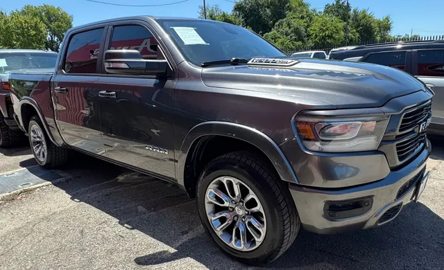

2019 Ram 1500 Laramie
Gris • ID CCH-13

1/2Datos generales
| Año | 2019 |
| Marca | Ram |
| Modelo | 1500 Laramie |
| Tipo | Troca |
| Color | Gris |
| Millas | 147,000 millas |
| Asientos | 5 o 6 pasajeros |
Motor y transmisión
| Motor | 5.7L HEMI V8 |
| Potencia | 395 hp |
| Torque | 410 lb-pie |
| Transmisión | Automática de 8 velocidades |
| Tracción | Por confirmar |
| Combustible | Gasolina |
Capacidades
| Tanque de combustible | 26 galones |
| Rendimiento | 15/22 MPG (ciudad/carretera) |
Dimensiones
| Largo | 232.9 pulgadas |
| Ancho | 82.1 pulgadas |
| Alto | 77.5 pulgadas |
| Distancia entre ejes | 144.6 pulgadas |
Carrocería
| Rines de serie | 18 pulgadas |
Se ve en las fotos
- Cabina doble
- Rines de aluminio
- Parrilla cromada
- Espejos cromados
Ideal para
Viajes largos y trabajo, con espacio y comodidad de sobra.
Ficha técnica del modelo según el fabricante y medios especializados. Confirma los datos exactos de esta unidad con el dealer.
Motor de serie del trim Laramie según Stellantis/MotorTrend (5.7L HEMI con 395 hp / 410 lb-pie, automática de 8 velocidades 8HP75; versión eTorque mild-hybrid con las mismas cifras también disponible). Tracción no confirmada: RWD de serie, 4x4 opcional.
Nueva generación de Ram 1500 (no "Classic"). Versión Laramie 2WD no-eTorque según J.D. Power; tracción, cabina y caja de la unidad no verificadas. / New-generation Ram 1500 (not "Classic"). Laramie 2WD non-eTorque version per J.D. Power; unit's drivetrain, cab and bed unverified.